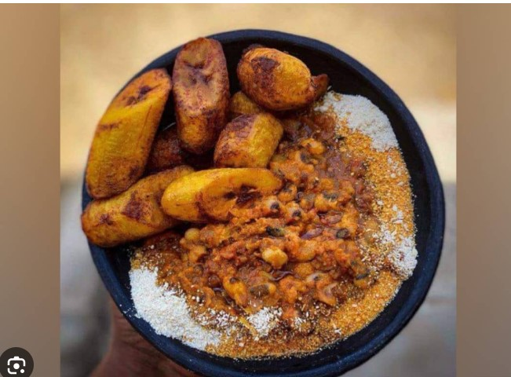

Borbor

What is borbor?
Borbor is a popular Ghanaian food. It is very heavy food that can take you through the whole day without feeling humger. Although it is called borbor by the Eve tribe in Ghana, it is popular as gorber amang the Akans(the largest ethnic group in Ghana).
ingredients
- 1 cup beans
- 5 1/2 -6 cups water
- 1/2 teaspoon salt
- A very ripe plantain.
- palm oil
- 1/4 cup of gari
steps
- Wash beans and pour in a large saucepan with 5 cups of water and put on high heat.
- Boil for 1 hour 30 minutes
- Add the salt
- Reduce the heat and allow the beans to soften up.
- Put the palm oil on fire and add slices of onion.
- Fry the plantainin the palm oil.
- Serve by pouring the plantainand palm oil on the beans. Sprinkle gari on top and voila!!!